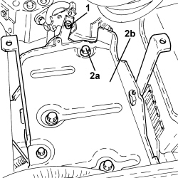
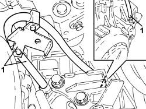
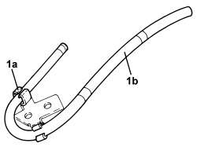

2130B81 AUTOMATIC TRANSMISSION OIL BREATHER FLEXIBLE PIPE - R.R.
- Path
- Procedures > 21 GEARBOX UNIT > 2130 AUTOMATIC TRANSMISSION WITH DIFFERENTIAL > 2130B AUTOMATIC TRANSMISSION COMPONENTS > 2130B81 AUTOMATIC TRANSMISSION OIL BREATHER FLEXIBLE PIPE - R.R.
- Kind
- repair procedure (removal / refitting; the operation number is the code)
- Applies to
- engines: 3.2 JTS; all production periods
- Interactive page
- https://sloeber94.github.io/elrnDB-aBrrSpdr/en/#/946004463
Applies to: engines: 3.2 JTS; all production periods
 Removing
Removing
 Refitting
Refitting1. Undo the bolt fixing the flexible breather pipe bracket to the battery drip tray.
2. Undo the bolts (2a) fixing the battery drip tray (2b) to the bodyshell and move it aside.

Applies to: engines: 3.2 JTS; all production periods
1. Remove the flexible breather pipe from the connector on the automatic gearbox.

Applies to: engines: 3.2 JTS; all production periods
1. Open the clips (1a) and separate the flexible breather pipe (1b) from the bracket.

Applies to: engines: 3.2 JTS; all production periods
Refitting
Removing- Connect the flexible breather pipe to the bracket using the special retaining clips.
- Connect the flexible breather pipe to the connector on the automatic gearbox.
- Refit the battery drip tray in its seat and secure it to the bodyshell using the bolts.
- Tighten the bolt fixing the flexible breather pipe bracket to the battery drip tray.